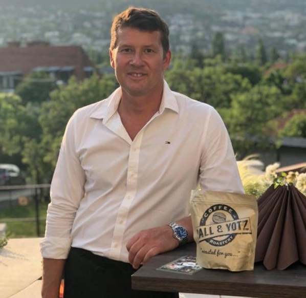

A
Pall & Yotz kávépörkölő vállalkozásomat a téma iránti érdeklődés hívta életre hosszú évek alatt. Első
kávéfőzőm megvásárlása után az interneten információk után kutakodva jutottam el egy kávés fórumhoz
/index-Kávéológia/, ahol gyakorlatilag ott ragadtam és azóta is jelen vagyok. A rengeteg, évek alatt
összegyűlt információ hatására néhány esztendőt és jó néhány kávés eszközt magam mögött tudva, 2010-ben
vettem meg első kis kávépörkölő gépemet, amellyel lelkes kísérletezésbe kezdtem. A tevékenység
rendkívül szórakoztatónak bizonyult, közel állt hozzám az "állítsunk elő valami jót, érdekeset" érzés
és úgy éreztem kreativitásom kielégítésével kapcsolatban végre táptalajra leltem. Ismerőseim, barátaim
is biztattak, érdeklődéssel szemlélték ügyködésemet a masinával, sokan kóstolták, véleményezték a hol
tudatos, hol a véletlen ihlette kávékeverékeimet. Időközben a Kávékorzó internetes portál tesztelője
lettem, éveken át kóstoltam és véleményeztem a különféle gyártók termékeit. Több ízben trieszti
kávépörkölő üzemeket is felkerestünk nyaranta barátaimmal, ezen alkalmak során tátott szájjal szívtuk
magunkba az információk seregét. /Sandalj, Illy, Goriziana/
A néha meglehetősen rögös, de mindenképp szórakoztató és izgalmas úton haladva egy ponton elhatároztam,
hogy kialakítok egy saját, kávépörköléssel foglalkozó vállalkozást. Célom egy olyan szolgáltatás
nyújtása volt, amit vásárlóként minden téren magam is igénybe vennék. Így született meg a "roasted for
you..." szlogenem, azaz hogy a legjobb tudásom szerint akár személyre szabott igényeket elégítsek ki
úgy, hogy közben maga a tevékenység számomra is élvezet legyen. A hagyományos klasszikus vonal mellett
termékeim között megtalálhatóak a manapság egyre divatosabb és kétségkívül rendkívül izgalmas ízvilágot
képviselő magas minőségű single origin arabika kávék is.
A kávépörkölést művészetként is szokták aposztrofálni, én a magam részéről a folyamatos fejlődésben és
kísérletezésben hiszek, de legfőképp abban, hogy amit élvezettel és szeretettel végez az ember, az
garancia a minőségre. Ezen szemlélet eredménye kóstolható meg, ha kinyit valaki egy zacskó Pall & Yotz
kávét.
A Pall & Yotz kávék a következő kávézókban kóstolhatók meg: Locavore, Chili, Rézkígyó, Hullám Hostel,
Jardinette, Cafe Madeleine, Filter Kultúrkávéház, Cocó 7 .